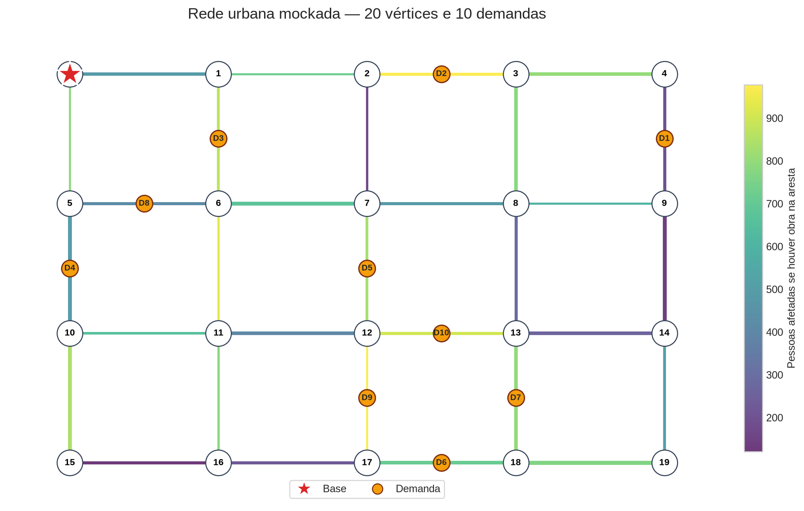
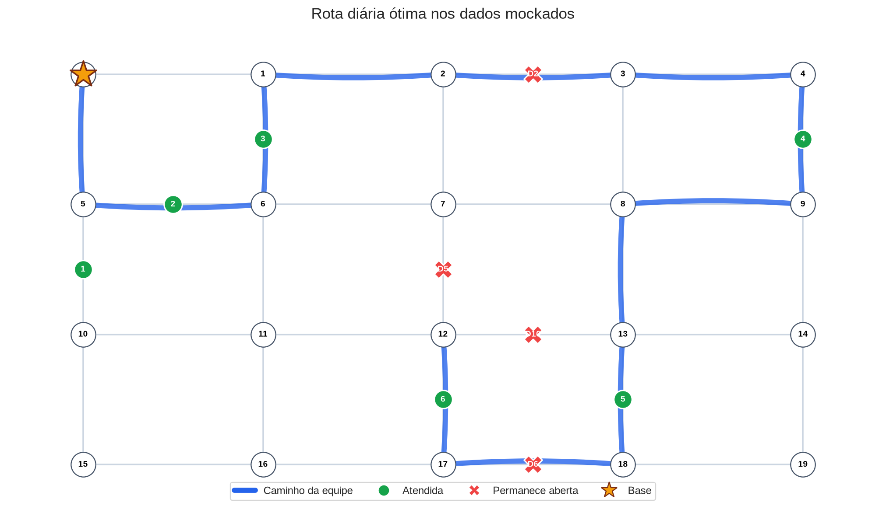

O problema
Microobras são pequenas.
O impacto não.
As subprefeituras têm recursos finitos, pedidos demais e prioridades diferentes.
Nossa hipótese: saber onde as pessoas estarão permite intervir com o menor transtorno possível.
Nosso objetivo
Transformar restrições urbanas em uma rota diária defensável.
Um alocador que escolhe o que atender, em que ordem e quando executar.
Passo 1 · Extração de dados
A cidade já produz sinais.
Precisamos conectá-los.
Entradas, saídas e eventos revelam como o fluxo urbano se redistribui ao longo do dia.
Passo 2 · Representação
A cidade vira um grafo que muda com o tempo.
Vérticesgrandes cruzamentos e pontos operacionais
Arestasruas que conectam esses pontos
ne(t)pessoas afetadas se houver obra na rua
τe(t)tempo estimado para atravessar a rua

Passo 2 · Forecasting espaço-temporal
Prevemos o fluxo antes de escolher a obra.
Assim como a meteorologia prevê o estado futuro de uma atmosfera conectada, usamos o histórico da rede para estimar o estado futuro da cidade.
Passo 3 · Otimização
A melhor rota equilibra urgência, espera e impacto.

A interface
Como a equipe recebe
e redireciona cada demanda.
O otimizador decide a rota. Quem opera precisa ver, entender e despachar — sem ler código nem planilha.
Como coletamos os dados
Do mapa real do Paraíso
à pontuação de cada rota.
Rodamos a operação sobre a malha real do bairro e medimos os pontos que cada estratégia captura numa jornada de 8h.
1 · Mapamalha real do Paraíso, importada do OpenStreetMap
2 · Rededeslocamento real, rua a rua, simulado no SUMO
3 · Grafos24 grafos — 8 horas × 3 repetições, com congestionamento
4 · Pontoscada política percorre a cidade e soma seus pontos
Resultado · Paraíso, São Paulo
O dobro de pontos
que o método de hoje.
(FIFO · atual)